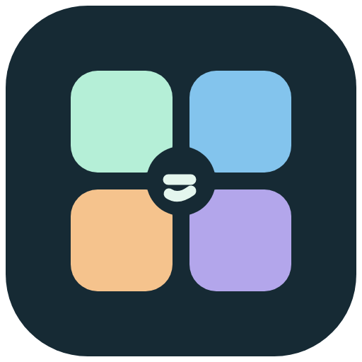
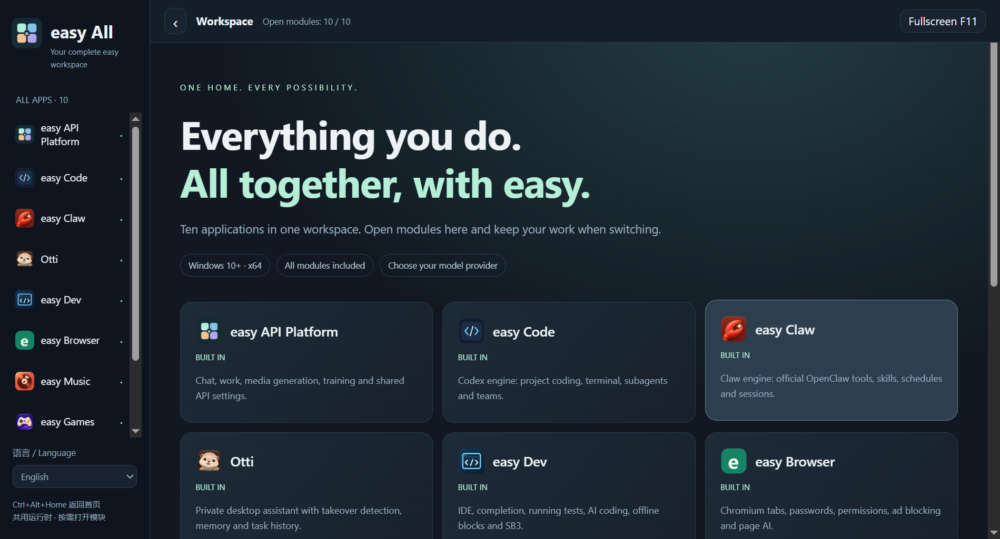

easy API平台
聊天、工作、建模、音乐、图片与视频、训练；统一管理 API。

easy Alleasy All 把十款软件的能力放进同一个桌面应用。左侧选择模块，直接在同一窗口工作，切换时保留当前内容。
Windows 10 及以上 x64 · 1.0.0 · 2026.11.11
下载 easy All ↓默认安装 D:\easy All，可在向导更改位置。无需另装十款独立应用。

聊天、工作、建模、音乐、图片与视频、训练；统一管理 API。
Codex 模式引擎：编程任务、文件工具、终端、子智能体与团队。
Claw 模式引擎：官方 OpenClaw、工具、技能、定时任务和会话。
本机私人助理，浏览器与桌面操作、用户接管、记忆和任务记录。
IDE、代码补全、运行测试、AI 编程、离线积木与 SB3。
Chromium、多标签、密码与网站权限、广告过滤和网页 AI。
本地音视频库、MP3/M4A/MP4、播放列表与全屏。
40 款离线游戏、原创 3D、房间联机与 API 对战。
角色养成、图鉴、桌面宠物、API 聊天与自定义形象。
自定义名字、提示词、头像和称呼的本地 AI 对话。
整合应用内，easyAPI 的 Codex 按钮进入真实 easy Code 引擎，保留文件、终端、权限模式、子智能体和团队能力。首次可关联当前 API，输入草稿会带过去，但不会自动发送。
整合应用内，Claw 按钮进入 easy Claw，使用内置官方 OpenClaw 2026.11.2。选择工作目录、关联 API 后启动网关，在内置控制台管理聊天、工具、技能和定时任务。
编程智能体用 Code，代码和积木项目用 Dev，网页浏览用 Browser，音视频播放用 Music。API 音乐生成与本地音乐播放、宠物养成与自定义角色聊天仍保留各自用途。
共用一套 Electron / Chromium，模块按需加载。Otti 控制条、桌面宠物、预览与无痕窗口会按功能显示辅助窗口。
安装并运行 easy All，从首页卡片或左侧栏选择模块。Ctrl+Alt+Home 返回首页；关闭整合应用会结束它拥有的服务与任务。
打开 easyAPI 设置填写自己的服务商、模型和 Key。其他支持关联的模块通过“读取 easy API 设置”选择。首次会读取本机原 easyAPI 的配置，不覆盖原软件。
开发者进入 Dev 或 Code，日常任务使用 easyAPI 或 Otti，娱乐与陪伴进入 Games、Music、Pet 或 AI friend。离线功能不需要 API。
适合同时需要多个 easy 工具、希望在同一窗口切换工作与娱乐的 Windows 用户。只需要一项能力，也可以继续选择官网的独立安装版。
全部十款模块均随安装包提供，支持 Windows 10 及以上64位系统。
1.16 GiB · 默认安装 D:\easy All整合应用资料保存在 %APPDATA%\easy All，按模块分开；原独立软件的聊天、项目、浏览器资料不会自动搬入。卸载保留用户数据。安装包不包含个人密钥、账号或存档。
模型服务账号、API Key 与 Python/C++/Java 工具链由用户自行提供。在线任务内容按实际使用发送给服务商；各模块的权限、费用与兼容边界继续适用。
Dev 支持常用 SB3 积木导入编辑导出；未知扩展会标明并保留，不能保证所有 TurboWarp 项目可运行。Browser 仍不包含 Chrome 扩展、账号云同步与完整自动更新。Games 公私房间属于同一服务器，不等于公网匹配大厅。
已验证十模块嵌入、引擎切换与草稿保留、真实 Python、编程工具、网页、媒体库、桌面宠物、房间服务器与官方网关启停；模型工具流程使用测试响应，未逐家验证付费模型和全新 Windows 设备。
GitHub Releases